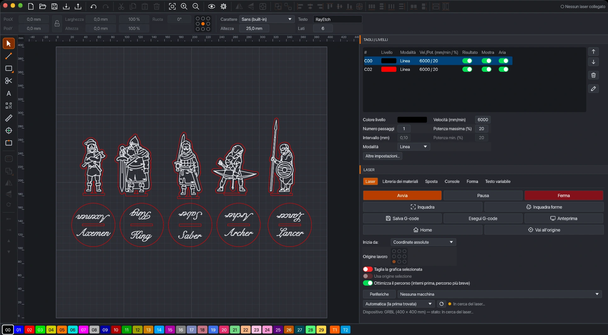

Vector design
Draw shapes and text, combine objects and create offset contours.
RayEtch is a free and open-source alternative to LightBurn with a familiar workflow for laser design, cutting and engraving.
Windows · macOS · Linux / Apache 2.0

A desktop workspace for organizing and preparing laser jobs. Available in English, Italian, Spanish, French and German.
Draw shapes and text, combine objects and create offset contours.
Import SVG, DXF and bitmap images. Save .rayetch projects or export SVG and G-code.
Configure power, speed, passes and scan intervals across 30 processing layers.
Line, Fill, Offset Fill and Image modes, including grayscale and dithering.
Inspect animated paths, travel moves and estimated job times.
Serial control of compatible GRBL, GRBL-M3 and grblHAL controllers, with framing and jogging.
Choose the correct package for your operating system and processor. Downloads are hosted on GitHub.
Verified links for Beta 4. Checking for newer releases…
All releases and source archives →
Designed for a workflow similar to LightBurn, RayEtch is an independent application written in Rust. Full LightBurn project, feature and device compatibility is not guaranteed.
Laser users, makers and LightBurn users are invited to test the beta, report bugs and suggest improvements. Every useful report helps make RayEtch more reliable.
Yes. The software is distributed under the Apache 2.0 license.
No. It offers a similar workflow, but complete feature, project and hardware compatibility is not guaranteed. RayEtch is an independent project.
Compatible serial GRBL, GRBL-M3 and grblHAL controllers. Verify your machine before use.
RayEtch is not notarized by Apple. Read the official README for first-launch instructions. Never bypass malware or damaged-app warnings.
You can report a bug directly from the app or open an issue on GitHub. Include your RayEtch version, operating system, laser controller, and the steps to reproduce the problem.
Laser safety: check work area, preview, speed and power; use suitable eye protection and ventilation, follow your machine instructions and never leave a running laser unattended.